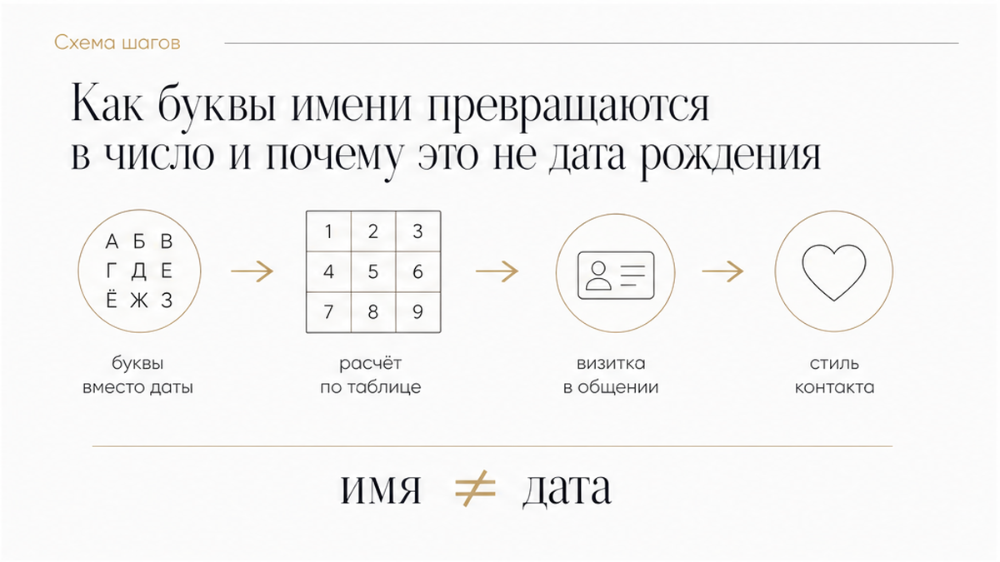
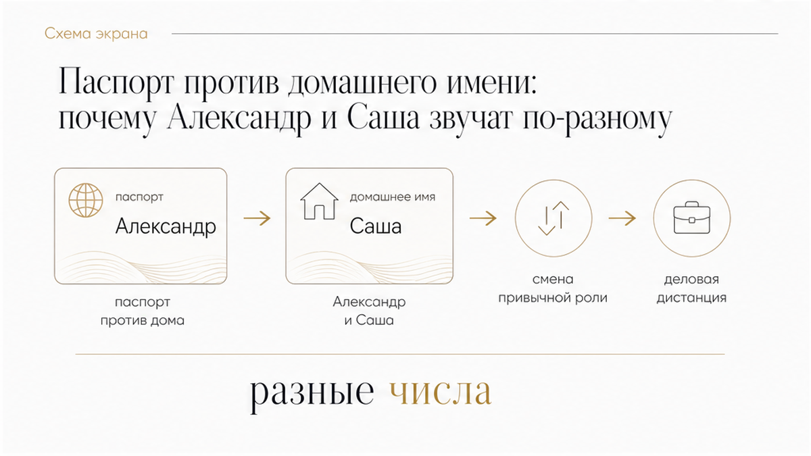
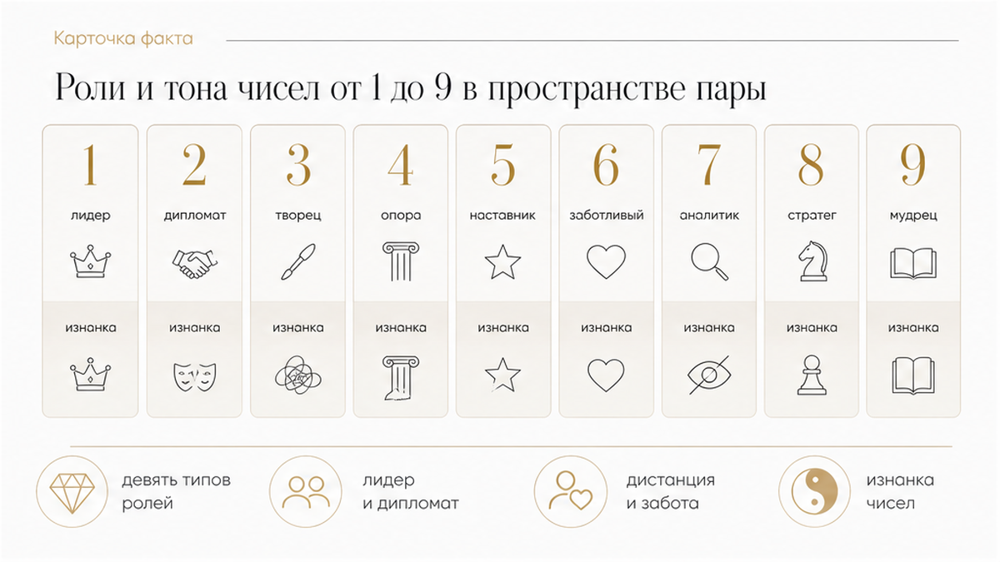

Возьмём день: в рабочем чате он отвечает сдержанно и сухо как Александр, а дома ты привыкла звать его Сашей. В одном разговоре он решительно ведёт диалог и берёт всё на себя, а в другой вечер замыкается в глухой паузе, заставляя гадать о причинах. Ты начинаешь перебирать в голове даты рождения или решать, что он внезапно остыл и отношения трещат по швам. На деле меняется не дата и не предначертанная судьба, а роль, в которую человек включается в ответ на конкретное имя и привычный тон контакта.
Сразу к делу: число имени складывается из букв и показывает не приговор отношениям, а привычный стиль общения и роль мужчины в контакте. Домашнее уменьшительное имя и паспортное ФИО дают разные числа — поэтому один и тот же человек на работе держит дистанцию, а дома включает совсем другой регистр. Когда тон партнёра стал непонятен и важно быстро прояснить скрытые мотивы без домыслов, таро помогают увидеть реальное состояние ситуации.
Вопросы, которые стоит задать картам при внезапном охлаждении или смене тона:
Разобрать ситуацию можно в двух удобных форматах:

В нумерологической традиции число имени рассчитывается простым сложением: буквы переводят в цифры от 1 до 9 по девятистолбцовой таблице, а затем складывают до однозначного результата. Например, в классической пифагоровой раскладке имя АННА складывается как 1 + 6 + 6 + 1 = 14, что сворачивается в 1 + 4 = 5.
Принципиально важно разделять число имени и дату рождения:
Стоит учитывать, что единого стандарта нет и таблицы перевода кириллицы могут отличаться. В пифагоровой системе АННА даёт пятёрку, а в ведических калькуляторах может свестись к единице. Поэтому число имени — это инструмент для понимания манеры общения, а не жёсткая догма.

Один и тот же человек в течение дня откликается на несколько вариантов своего имени, и каждый набор букв создаёт собственное число и звуковой фон:
То же самое происходит при смене фамилии после заключения брака: официальное число выражения меняется, постепенно формируя новые привычки в течение нескольких месяцев, однако исходное имя при рождении остаётся базовым фундаментом.
Здесь во многом работает психологический эффект самоисполняющегося пророчества: когда партнёры верят в созвучие своих имён, они охотнее идут на компромисс и мягче реагируют на бытовые шероховатости. Число имени помогает настроить тон, но не заменяет открытого разговора и не читает чужие скрытые мысли.

Нумерологи сходятся в том, что абсолютно несовместимых чисел не существует. Каждое число задаёт свой характерный тон взаимодействия и свою изнанку:
Мастер-числа 11 и 22 в некоторых школах не сворачивают, рассматривая их как усиленные проявления двойки и четвёрки.
Число имени помогает понять привычную манеру человека держаться в диалоге, но не раскрывает его сиюминутные переживания и скрытые сомнения. Ждать неделями, пока мужчина выйдет из молчания — слишком дорогая аренда собственного спокойствия. Карты таро помогают быстро снять тревогу, увидеть реальный подтекст ситуации и выбрать верный шаг без давления.
Расставь точки над «i» и верни себе ясное понимание происходящего: